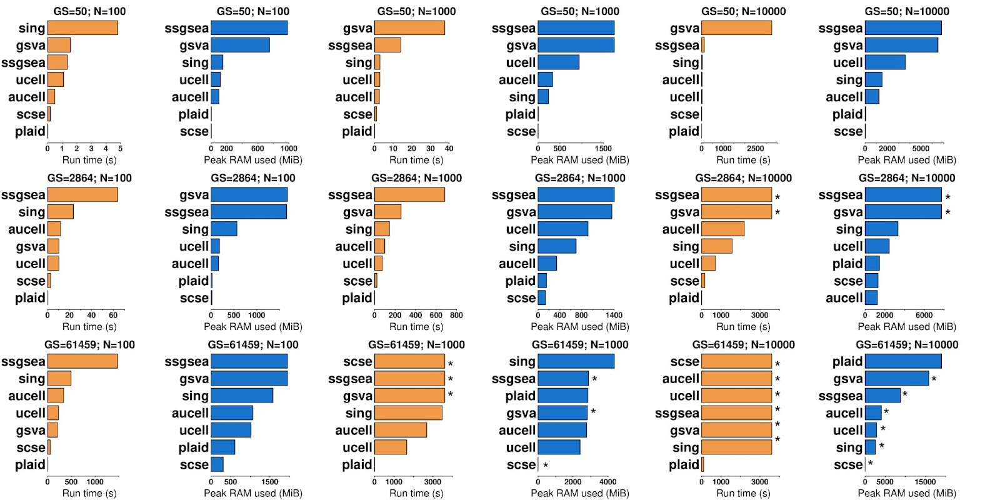
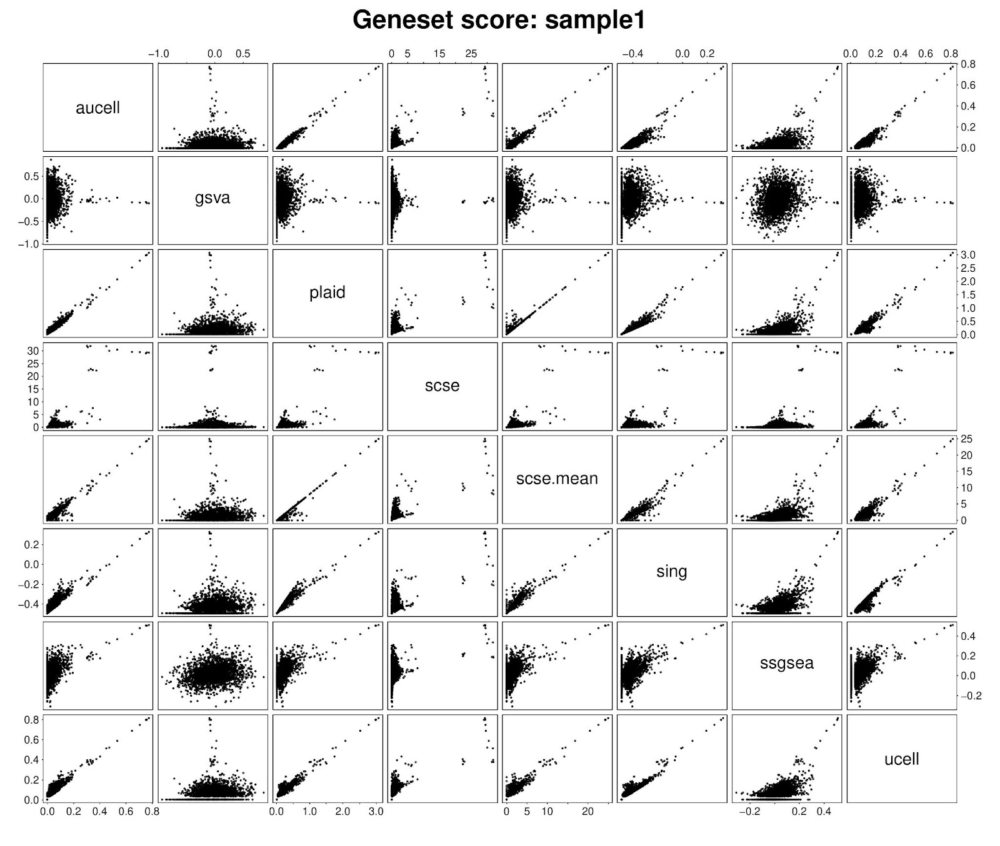
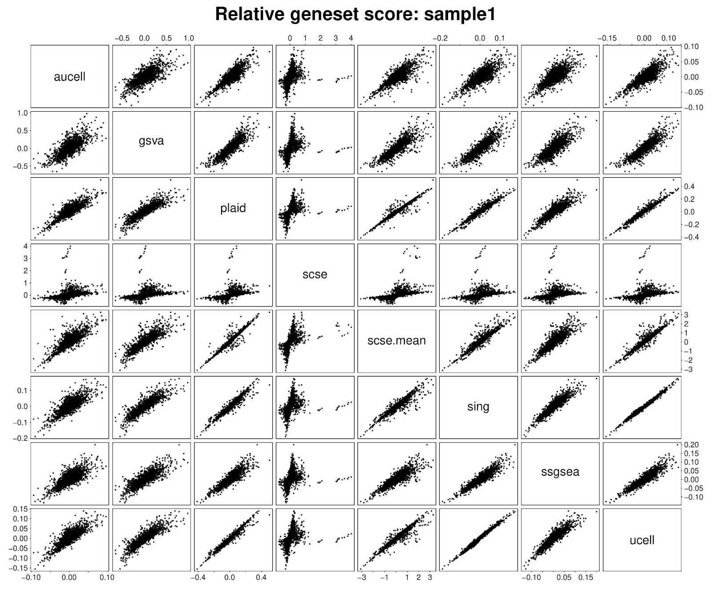

Comparing PLAID with other methods
BigOmics Analytics
Source:vignettes/02_compare-vignette.Rmd
02_compare-vignette.RmdIntroduction
Single-sample gene set and pathway scoring enable the prioritization of molecular signatures of individual samples, highlighting potential targets for personalized medicine. Several methods have been developed, each with distinct strengths and limitations. The most widely used include ssGSEA, GSVA, AUCell, singscore, scSE and UCell. These methods differ in preprocessing steps of ranking, centering, and normalization. Despite methodical variations, these methods collectively offer vast flexibility for data analysis. Nevertheless, with the emergence of large-scale biological data (e.g., biobanks), most methods face substantial computational inefficiency. Except scSE, which is implemented in Go, other methods are in fact practically infeasible in runtime and memory requirements for large-scale data. This has limited the application of single-sample gene set scoring, hindering timely discovery.
We address this critical issue with PLAID (Pathway Level Average Intensity Detection). Within each sample, PLAID identifies the genes mapped within a gene set and calculates the gene set score as the average log-intensity of genes in the gene set. PLAID does not zero-center or rank features, and leverages sparse matrices for efficient computations.
Benchmarking
We evaluated PLAID in single-cell transcriptomics (PBMC3K), bulk proteomics, and microarray data. These data span diverse scenarios in terms of resolution and distribution, thus allowing comprehensive benchmarks. We compared PLAID runtime, peak memory, and gene set scores to Singscore, ssGSEA, GSVA, scSE, UCell and AUCell. Collectively these methods represent the most used single-sample gene set enrichment methods in biomedical research.
Comparison
Computational Performance

In scRNA-seq data, PLAID consistently outperformed other methods at different sample and gene set sizes. PLAID completed scoring for 2,864 gene sets in 1K cells in 0.17s, which is >100x faster compared to any other method. The second best method was scSE. Overall, the best memory-performing methods were PLAID and scSE. A similar trend was observed for 10K cells, where PLAID was >10x faster than other methods, while requiring similar RAM as other non-timed-out methods.
When testing 61,459 gene sets in 1K cells, PLAID, Singscore, UCell and AUCell successfully completed the gene set scoring. Other methods were timed out at 1h. PLAID completed the run in <8s, with <3GB peak RAM. Singscore, UCell and AUCell required >100x runtime compared to PLAID, with up to ~1.5GB additional memory. GSVA, ssGSEA and scSE were timed out, and neither runtime nor peak RAM usage were accurately estimated. For 61,459 gene sets and 10K cells, PLAID achieved gene set scoring within 1h, requiring 110s and <20GB peak RAM. Other methods were timed out, and would have required at least 5x additional computing resources for a complete run.
While working with sparse matrices would be ideal, researchers often use dense matrices. For a comprehensive evaluation, we thus conducted runtime and memory profiling of PLAID on the TCGA-BRCA microarray dense data matrix. In line with previous observations, PLAID outperformed other methods in most scenarios. For instance, PLAID was >100x faster than AUCell and GSVA for 61,459 gene sets and 1K cells, requiring 2.4GB. Altogether, these data demonstrate that PLAID is a highly efficient alternative to other single-sample gene set enrichment methods, but also that scSE remains a highly memory-optimized method capable of outperforming PLAID in some cases. Both runtime and peak memory usage increase approximately linearly with the number of cells or gene sets. For 1K gene sets and 1M cells, PLAID required about 200s and 28GB RAM peak memory.
Score Concordance


PLAID enrichment scores are median normalized to aid cross-group comparisons. While conceptually based on a self-defined metric, we nevertheless compared PLAID with other methods. We found that in scRNA-seq, for the first available cell, PLAID scores correlated well with Singscore, UCell and AUCell scores. By enabling calculation of mean, scSE produces scores highly concordant with PLAID. Lower similarities emerged with GSVA and ssGSEA. Notably, GSVA and ssGSEA also exhibited low concordance with any other method.
Critically, within any single sample or cell, the raw gene set scores are not well suited for direct comparisons between gene sets. Comparing gene sets would need statistical testing between samples, or centering gene sets across samples to obtain relative scores corresponding to gene set average centered log-expression. On the basis of this principle, we compared PLAID scores vs other methods’ scores after centering. Interestingly, we observed a generalized improved concordance with all methods, including with GSVA and ssGSEA. This supports the suitability of PLAID scores for differential testing between groups, and the possibility of cross-validating analyses from other methods.
Testing in a bulk proteomics dataset confirmed high similarity between PLAID and scSE.mean, and high concordance with Singscore and ssGSEA. Low concordance emerged between PLAID and GSVA, in line with previous observations. Both in scRNA-seq and bulk proteomics, GSVA was lowly correlated with any other methods. Improved concordance was reached upon gene set centering, supporting results in scRNA-seq data.
Replicating Other Methods
![Pairwise scatter plots between original and PLAID-replicated ESs for different methods (left to right): singscore, ssGSEA, GSVA, UCell, AUCell and scSE. Three testing datasets were used: (top to bottom): PBMC3K scRNAseq dataset; LC/MS proteomics dataset (Wolf et al., 2020); mRNA microarray (GSE10846; Lenz et al., 2008). In most cases, the PLAID (re)-implementation of the distinct enrichment methods provides accurate replication, with the key advantage of being significantly faster and memory efficient.](fig4.png)
Running independent methods to validate enriched gene sets is a best practice. However, given the computational inefficiency of most current methods, this may be time-prohibitive in large datasets. We provide a solution to this problem by equipping PLAID with the most widely used single-sample gene set enrichment methods.
We’ve implemented the following functions using PLAID as ‘back-end’:
replaid.sing, replaid.scse,
replaid.ssgsea, replaid.gsva,
replaid.ucell, replaid.aucell. These functions
provide efficient calculations of Singscore, scSE, ssGSEA, GSVA, UCell
and AUCell. To ensure accurate replication of the original methods, we
conducted testing in scRNA-seq, proteomics and microarray expression
data.
Best concordances are seen for replaid.sing,
replaid.scse, replaid.ucell and
replaid.aucell vs. each respective original method, with
further improvements made possible by method-specific parameters that
reflect original implementations. A somewhat relatively lower
concordance (especially for scRNA-seq data) emerges between
replaid.ssgsea and replaid.gsva vs. original
ssGSEA and GSVA, respectively. These methods were originally not
intended for scRNA-seq. Lower concordance is also related to the ‘alpha’
and ‘tau’ parameters, due to approximations of rank weightings and ECDF
in PLAID. Nevertheless, we achieve good concordance in nearly all cases,
with the unmatched advantage of reaching up to ten-fold gain in
computational efficiency.
Conclusions
These analyses demonstrate that PLAID is a highly-performing and accurate method for single-sample gene set scoring. PLAID is ultrafast and memory efficient, generating gene set scores highly concordant with existing methods. PLAID can be up to 100x faster and requires significantly less memory - reaching up to 5-fold reduction in memory usage - when compared to any other method in any dataset.
Altogether, these data demonstrate the multi-task power of PLAID in providing (i) its own single-sample gene set enrichment scores; (ii) unmatched computational efficiency; (iii) a framework for the most used single-sample enrichment methods, with much higher efficiency; (iv) evidence that if implemented expertly, the R language can be highly efficient.
Session Info
sessionInfo()
#> R version 4.3.3 (2024-02-29)
#> Platform: x86_64-pc-linux-gnu (64-bit)
#> Running under: Ubuntu 24.04.3 LTS
#>
#> Matrix products: default
#> BLAS: /usr/lib/x86_64-linux-gnu/blas/libblas.so.3.12.0
#> LAPACK: /usr/lib/x86_64-linux-gnu/lapack/liblapack.so.3.12.0
#>
#> locale:
#> [1] LC_CTYPE=en_US.UTF-8 LC_NUMERIC=C
#> [3] LC_TIME=en_US.UTF-8 LC_COLLATE=en_US.UTF-8
#> [5] LC_MONETARY=en_US.UTF-8 LC_MESSAGES=en_US.UTF-8
#> [7] LC_PAPER=en_US.UTF-8 LC_NAME=C
#> [9] LC_ADDRESS=C LC_TELEPHONE=C
#> [11] LC_MEASUREMENT=en_US.UTF-8 LC_IDENTIFICATION=C
#>
#> time zone: Europe/Zurich
#> tzcode source: system (glibc)
#>
#> attached base packages:
#> [1] stats graphics grDevices utils datasets methods base
#>
#> other attached packages:
#> [1] BiocStyle_2.30.0
#>
#> loaded via a namespace (and not attached):
#> [1] digest_0.6.38 desc_1.4.3 R6_2.6.1
#> [4] bookdown_0.45 fastmap_1.2.0 xfun_0.54
#> [7] cachem_1.1.0 knitr_1.50 htmltools_0.5.8.1
#> [10] rmarkdown_2.30 lifecycle_1.0.4 cli_3.6.5
#> [13] sass_0.4.10 pkgdown_2.2.0 textshaping_1.0.4
#> [16] jquerylib_0.1.4 systemfonts_1.3.1 compiler_4.3.3
#> [19] tools_4.3.3 ragg_1.5.0 bslib_0.9.0
#> [22] evaluate_1.0.5 yaml_2.3.10 BiocManager_1.30.27
#> [25] jsonlite_2.0.0 rlang_1.1.6 fs_1.6.6
#> [28] htmlwidgets_1.6.4